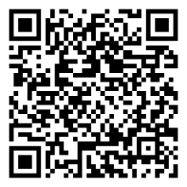
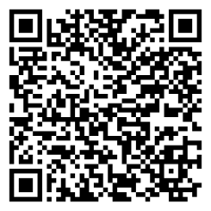

Revisión y corrección de textos
En el mundo tecnológico, donde cada línea de código, informe técnico o propuesta de proyecto puede marcar la diferencia, escribir de forma efectiva es una habilidad clave.
No se trata solo de plasmar ideas, sino de revisarlas y perfeccionarlas para asegurar que transmitan con claridad, coherencia y precisión lo que realmente quieres comunicar.
A medida que recorras las cinco etapas de revisión, irás incorporando estrategias prácticas y herramientas que te permitirán transformar cualquier texto en un producto bien estructurado,
claro y profesional. Piensa en cada corrección como una optimización que acerca tus ideas a su mejor versión.
💡 Recuerda: Aquí no solo aprenderás a escribir: aprenderás a pulir tus mensajes hasta que brillen con la misma precisión que buscas en la tecnología que creas o gestionas.
Objetivos de aprendizaje
- 🎯 Mejorar la capacidad de identificar y corregir errores ortográficos, gramaticales, de puntuación y de estilo para mejorar la calidad de textos escritos.
- 🎯 Fortalecer las competencias de revisión y edición de textos mediante la aplicación de estrategias estructuradas en diferentes etapas.
- 🎯 Reconocer y clasificar los diferentes tipos de errores presentes en un texto (ortográficos, gramaticales, de puntuación y de estilo).
- 🎯 Aplicar técnicas de revisión global para evaluar coherencia, propósito y unidad temática de un texto.
- 🎯 Organizar el contenido escrito siguiendo una estructura clara y lógica (introducción, desarrollo y conclusión).
- 🎯 Mejorar la claridad, precisión y fluidez del texto mediante la corrección de estilo.
- 🎯 Utilizar herramientas y recursos digitales para la detección y corrección de errores.

Actividades prácticas
Pregunta 1
La identificación de errores en un texto se refiere principalmente a:
Pregunta 2
En la Etapa 2 de la corrección (estructura), ¿qué aspecto se revisa principalmente?
Pregunta 3
Un error como escribir "los niño juega" corresponde a:
Evaluación
Comprueba lo que has aprendido. Selecciona la respuesta correcta para cada pregunta.
Recursos para Profundizar
Para ampliar tu conocimiento te recomendamos explorar los siguientes enlaces y documentos:
-
Ordenar las Oraciones
Ir al recurso -
Juego de signos de interrogación y exclamación
Ir al recurso